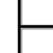
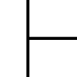
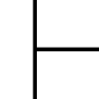
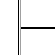

Атрибут border
| Internet Explorer | Chrome | Opera | Safari | Firefox |
| 3 | 1 | 4 | 1 | 1 |
| Android | Firefox Mobile | Opera Mobile | Safari Mobile |
| 1 | 1 | 6 | 1 |
Устанавливает толщину границы между фреймами. По умолчанию линия отображается трёхмерной, но используя атрибуты bordercolor и border можно настроить её вид по своему усмотрению. Браузеры по-разному интерпретируют атрибуты <frameset> и отображают линию. Например, для линии чёрного цвета толщиной 5 пикселей, её вид показан на рис. 1.
|  |  |  |  |
| Internet Explorer | Chrome | Opera | Firefox |
Рис. 1. Вид границы в разных браузерах
Синтаксис
<frameset border="значение">...</frameset>Значения
Целое положительное число. Значение 0 скрывает рамку.
Значение по умолчанию
Зависит от браузера и операционной системы.
Пример
<!DOCTYPE HTML PUBLIC "-//W3C//DTD HTML 4.01 Frameset//EN"
"http://www.w3.org/TR/html4/frameset.dtd">
<html>
<head>
<meta http-equiv="Content-Type" content="text/html; charset=utf-8">
<title>FRAMESET, атрибут border</title>
</head>
<frameset rows="*" cols="80,*" bordercolor="black" border="5">
<frame src="page/left.html" name="leftFrame">
<frameset rows="80,*">
<frame src="page/top.html" name="topFrame">
<frame src="page/main.html" name="mainFrame">
</frameset>
</frameset>
</html>Спецификация
Каждая спецификация проходит несколько стадий одобрения.
- Recommendation (Рекомендация) — спецификация одобрена W3C и рекомендована как стандарт.
- Candidate Recommendation (Возможная рекомендация) — группа, отвечающая за стандарт, удовлетворена, как он соответствует своим целям, но требуется помощь сообщества разработчиков по реализации стандарта.
- Proposed Recommendation (Предлагаемая рекомендация) — на этом этапе документ представлен на рассмотрение Консультативного совета W3C для окончательного утверждения.
- Working Draft (Рабочий проект) — более зрелая версия черновика после обсуждения и внесения поправок для рассмотрения сообществом.
- Editorʼs draft (Редакторский черновик) — черновая версия стандарта после внесения правок редакторами проекта.
- Draft (Черновик спецификации) — первая черновая версия стандарта.
Особняком стоит живой стандарт HTML (Living) — он не придерживается традиционной нумерации версий, поскольку находится в постоянной разработке и обновляется регулярно.